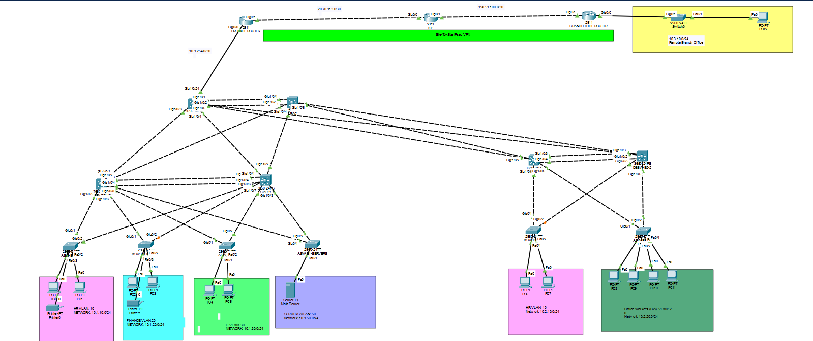
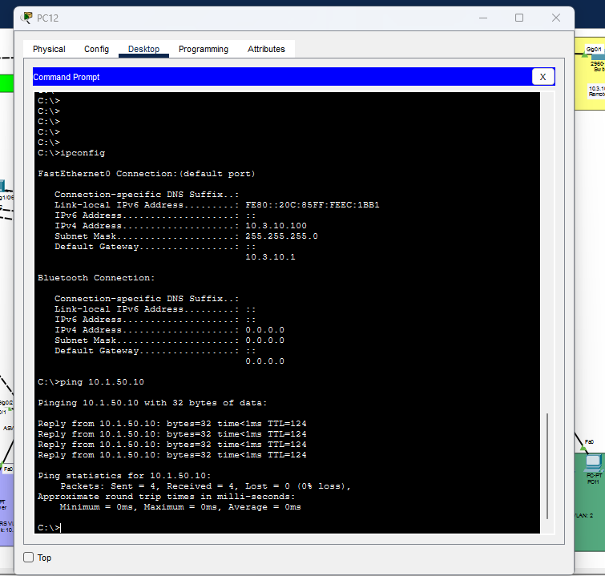

Project goals
For this project I designed and built a multi-site enterprise-styled network that used VLANs, HSRP for gateway redundancy, OSPF routing and a site-to-site IPsec VPN to connect a branch office to the headquarters building. I wanted to practice designing a network with multiple subnets, routing, and secure connectivity while also testing my troubleshooting skills. Lastly, I used a DHCP server at headquarters to practive dynamic addressing for local and branch clients.
Network design
- Headquarters with redundant core, distribution, and access switching layers.
- Separate VLANs and IP subnets for HR, Finance, IT, and servers to keep traffic isolated.
- A second building connected at the core layer, with their own subnets and routing.
- A Remote branch office connected via a site-to-site IPsec VPN, to simulate a secure connection to headquarter resources and private network.
- OSPF routing and a simulated ISP.
VPN and services
Configured a site-to-site IPsec VPN between headquarters and the branch. A central DHCP server at headquarters provides addressing to a branch client across the VPN. I tested IPsec status, routing, and client connectivity while troubleshooting route and ACL behavior.
Cisco Packet Tracer screenshot

Network Addressing Table
| Network | VLAN | Subnet | Default gateway |
|---|---|---|---|
| HQ HR | 10 | 10.1.10.0/24 | 10.1.10.1 |
| HQ Finance | 20 | 10.1.20.0/24 | 10.1.20.1 |
| HQ IT | 30 | 10.1.30.0/24 | 10.1.30.1 |
| HQ Servers | 50 | 10.1.50.0/24 | 10.1.50.1 |
| Building 2 HR | 10 | 10.2.10.0/24 | 10.2.10.1 |
| Building 2 Office Workers | 10 | 10.2.20.0/24 | 10.2.20.1 |
| Branch Remote Office | 10 | 10.3.10.0/24 | 10.3.10.1 |
Troubleshooting Case Study: IPsec VPN Routing Loop
Project overview
While configuring a site-to-site IPsec VPN between a remote branch office and headquarters in Cisco Packet Tracer, I encountered a routing issue that prevented successful communication between a branch PC and a server at headquarters. Although the initial ICMP request reached the headquarters network through the VPN tunnel, the server's reply was caught in a routing loop between the core switch and the edge router.
Problem
I tested connectivity by pinging the DHCP server at headquarters (10.1.50.10) from a PC on the remote branch network (10.3.10.0/24). The ICMP request reached the server, but the reply did not make it back to the branch PC.
During troubleshooting, I observed the returning traffic repeatedly bouncing between the headquarters core switch and the edge router until it was dropped. Since the request had reached its destination, this pointed to a routing issue rather than an initial VPN connectivity problem.
Troubleshooting process
I investigated the headquarters edge router's routing configuration and examined its routing table. I found a static route directing traffic for the 10.x.x.x private address space back toward the core switch. Because the remote branch also used a 10.x.x.x address range, return traffic was sent to the core switch instead of toward the edge router for delivery through the VPN tunnel. The core switch and edge router kept forwarding the packet to each other without a valid path to its destination.
Solution
I removed the incorrect static route from the edge router's configuration. This allowed the routing configuration to direct return traffic appropriately, so the edge router could forward it through the established IPsec VPN tunnel to the remote branch.
Verification and results
To verify the fix, I sent another ICMP ping from the branch PC to the headquarters DHCP server at 10.1.50.10. The ping succeeded, and the branch PC received a reply from the server. This confirmed that traffic could travel from the branch to headquarters and return through the VPN tunnel.
Key takeaways
This experience reinforced how routing tables, static routes, and VPN tunnels interact. A VPN can be established and carry traffic in one direction while an incorrect route prevents return traffic from reaching its destination.
It also helped me develop a systematic troubleshooting approach: verify connectivity, identify where packets stop progressing, inspect routing decisions, correct the underlying configuration, and test again to confirm the resolution.

Skills practiced
What I plan to add
- Sanitized configuration excerpts and verification commands.